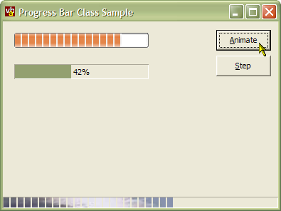

Progress Bar Class Source Code and Demonstration (34K)
Progress Bar Class Source Code and Demonstration (34K)
 Bugs: 0 / 1
Bugs: 0 / 1
 Issues: 0 / 0
Issues: 0 / 0
 Questions: 0 / 0
Questions: 0 / 0
 28 Mar 2003
28 Mar 2003
Some of the enumerations supplied with the original release of this class were awkward to use in VB since they clashed with some of VB's own words (particularly Left and Right). All the enumerations have been modified so this problem no-longer occurs.

vbAccelerator Progress Bar Class
Full progress bar functionality without the control
This article provides a class that allows you to draw progress bars onto any control, form or API created object with a hDC property. The drawing code is derived from the vbAccelerator Progress Bar control and all functionality except Image Processing and persistence of data is included.
Using the Class
To incorporate this code into your project, you need to add:
- cProgresssBar.cls
This implements the progress bar itself. - pcMemDC.cls
This helper class provides storage for pictures and flicker-free drawing into an off-screen DC for the progress bar. You do not use any methods of this class when using the progress bar (although you are free to use it anyway if its useful in your code!)
To set up your application to use the control, first determine where you want the control to paint. You have three options:
- Into a control dedicated to showing the progress bar.
This is the easiest method since you don't have to work out the position to draw the object. You can also apply a ToolTip to the progress bar through the control's ToolTipText property. The control you use must support hDC and hWnd properties, for example a PictureBox. - Onto some part of a form or control.
When using this method, you need to provide the rectangle to paint the progress bar into. Tooltip processing can be a little more tricky this way but it does conserve on resources. - Onto an API created object with a hDC property.
Similar to painting on some part of a form or control, except you need to provide a hWnd (this can be any hWnd in your application, it does not have to be related to the thing you're drawing the progress bar onto), the hDC of the control to draw into and the rectangle.
To draw into a picture box, let's say it is called picProgress, the code would be like this:
Private m_cProgress As New ProgressBar
Private Sub Form_Load()
' Set up properties:
With m_cProgress
.DrawObject = picProgress
.Min = 0
.Max = 100
.XpStyle = True
End With
End Sub
Private Sub picProgress_Paint()
' Ensure the bar redraws:
m_cProgress.Paint
End Sub
Private Sub DoSomethingWithProgress()
' Do some work
' ...
' Update the progress bar:
m_cProgress.Value = m_cProgress.Value + 1
End Sub
Note that you should not set the AutoRedraw property of the object you are painting on, otherwise changing the value or similar will not work because the Refresh method has to be called before changes are displayed.
To draw onto a specific rectangle is similar, except you do not set the DrawObject property. In the Paint event, use the DrawToDC method which allows you to pass in a hWnd to use to detect XP Styles, the hDC to draw on and the bounding rectangle to draw the control in. Note that the code as delivered will not automatically repaint the progress bar when you set the any of the properties like value so you will need to force a repaint. You can switch on automatic repainting by uncommenting the InvalidateRect line in the Draw sub of the cProgressBar class.
Drawing onto an API control is performed in the exact same way as drawing onto a specific rectangle.
Documentation
Refer to the control article for full documentation on the methods and properties of the class.